En este ejercicio hay que acabar entregando una carpeta con el nombre del alumno y que contenga:
las capturas de pantalla (que se llamen nombre_alumno_XXY.png donde X sea el número de ejercicio e Y el número de captura del ejercicio).
el fichero estilo.txt del ejercicio 6.
el fichero alias.txt del ejercicio 8.
la copia de seguridad de los datos de la aplicación del ejercicio 9.
la carpeta de la aplicación (comprimida en un zip) del ejercicio 9.
En los enunciados de los ejercicios se muestran capturas parciales como ayuda, pero las capturas que se entreguen en el examen deben ser capturas de toda la pantalla.
No cree el alias antes de instalar la aplicación.
1. Instalar (1 punto)
Elgg es una plataforma de creación de redes sociales
Entre en phpMyAdmin como usuario root y cree un usuario de MySQL con nombre iaw_elgg_1, contraseña iaw_elgg_1 y base de datos iaw_elgg_1.
Abra en el navegador /elgg e instale Elgg creando el usuario administrador con nombre de usuario admin y contraseña adminadmin (y escriba su nombre real como nombre a mostrar)
Modifique el archivo necesario para eliminar el aviso de instalación
Ayuda: Este problema aparecía también en la instalación de Drupal.
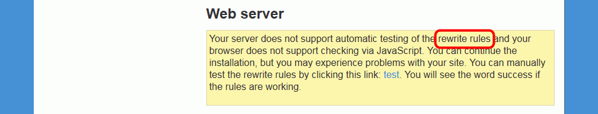
Haga una captura una vez resuelto el problema
Configuración del sitio:
Site Name: Comunidad WebApps
Data directory: data
Default site acces: Public
Haga una captura nada más terminar la instalación:
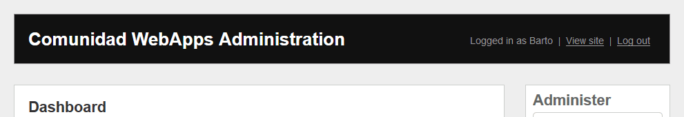
2. Configuración del sitio (1 punto)
Cambie el idioma del sitio al español e impida la entrada al sitio y el registro a usuarios no registrados:
Haga una captura con el resultado:
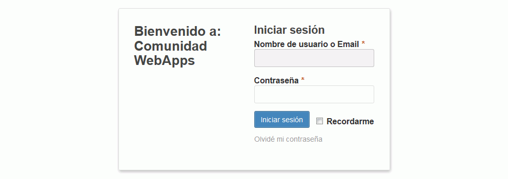
3. Crear elementos (1,5 puntos)
Cree una página:
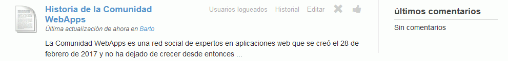
Cree dos usuarios no administradores, con contraseña igual a su nombre de usuario:
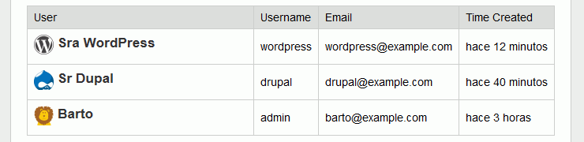
Imágenes de usuarios:
Cree un grupo de expertos e incluya al Sr Drupal y a la Sra WordPress en él:
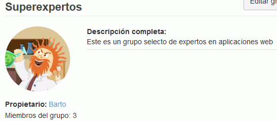
Imagen del grupo:
4. Modificar la página de entrada (1,25 puntos)
Incluya las páginas Acerca de, Términos y Privacidad en la página principal:
Haga dos capturas:
de la página en la que ha añadido estas páginas
del resultado
Escriba contenido en la página Acerca de:
Haga dos capturas:
de la página en la que ha editado esta página
del resultado
Edite el fichero php necesario para eliminar las páginas Términos y Privacidad de la página principal:
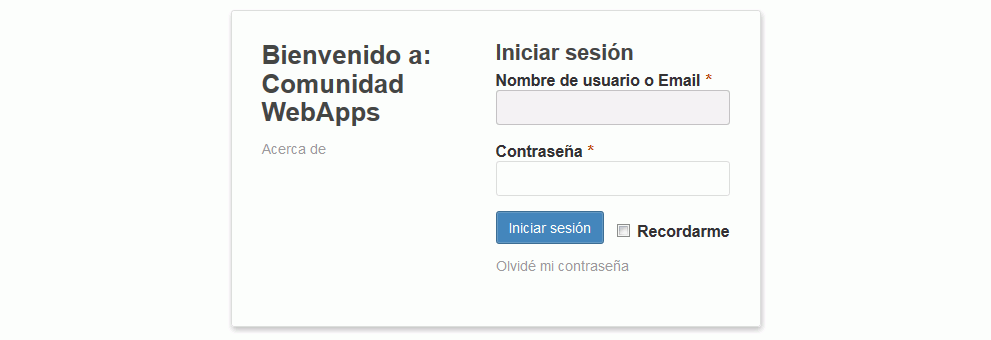
Haga una captura del resultado
5. Idiomas (1,25 puntos)
Mejore la traducción al español:
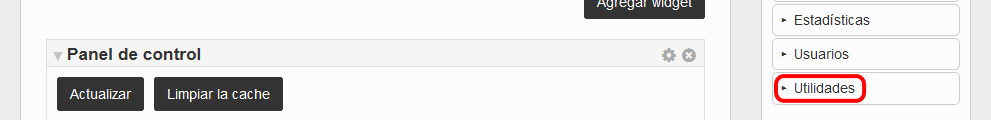
Haga dos capturas:
del fichero en el que ha mejorado la traducción
del resultado
Mejore la traducción al español:
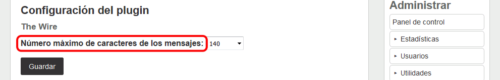
Haga dos capturas:
del fichero en el que ha mejorado la traducción
del resultado
6. Modificar el estilo (1,25 puntos)
Modifique el estilo predeterminado de Elgg
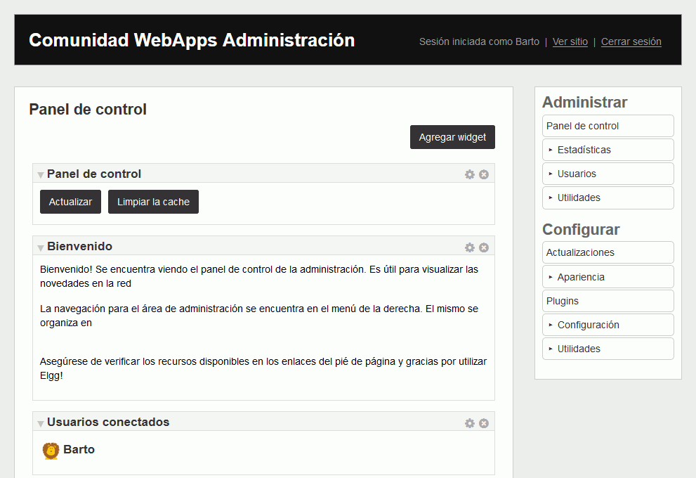
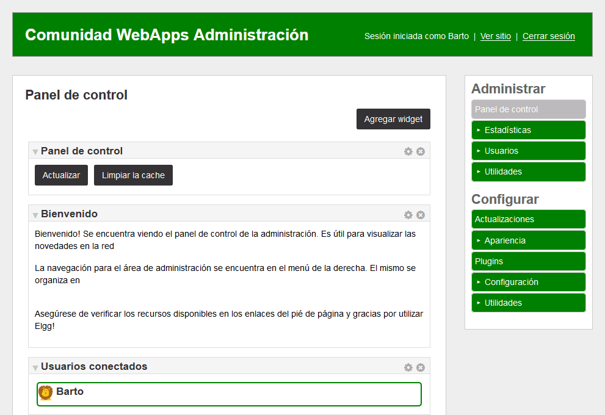
Notas:
El color utilizado es el green
Las reglas se pueden escribir al final de la hoja de estilo
Es necesario Limpiar la caché para comprobar los cambios
No edite ficheros temporales (en /cache)
Haga una captura mostrando el resultado.
Cree un fichero estilo.txt con las reglas añadidas.
7. Crear nuevo estilo (1,25 puntos)
Cree un nuevo tema con su nombre.
El tema se mostrará al final de la lista:
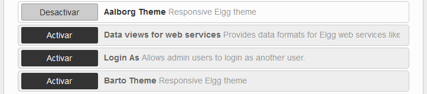
Nota: Los mensajes de error que se muestran en esta página le ayudarán a saber los ficheros que debe modificar.
Haga una captura.
Active el tema con su nombre y desactive el tema por defecto:
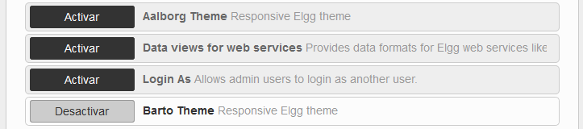
Nota: Si el navegador no muestra nada, detenga y actualice la página para ver el motivo del error.
Haga una captura.
8. Alias (1 punto)
Cree un alias para poder acceder a Elgg mediante la dirección http://localhost/elgg.
Escriba un fichero alias.txt con el alias que ha creado.
Entre como usuario administrador.
Haga el cambio necesario para que se mantenga la dirección http://localhost/elgg.
Haga una captura mostrando que funciona el alias.
Describa brevemente en el fichero alias.txt cómo lo ha conseguido.
9. Copia de seguridad (0,5 puntos)
Como usuario iaw_elgg_1 haga una copia de seguridad de la base de datos iaw_elgg_1.